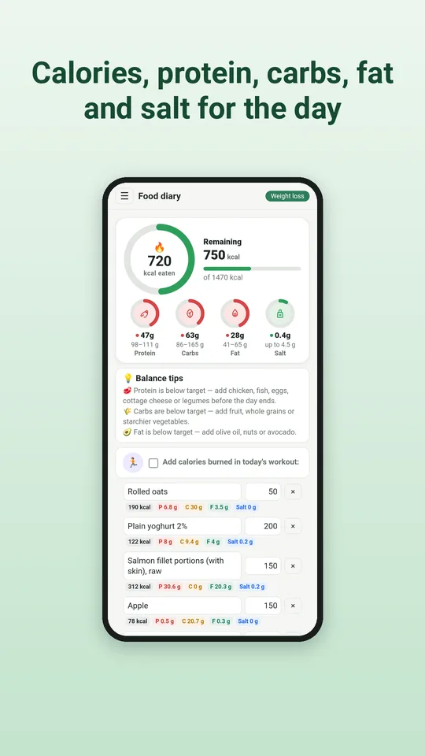
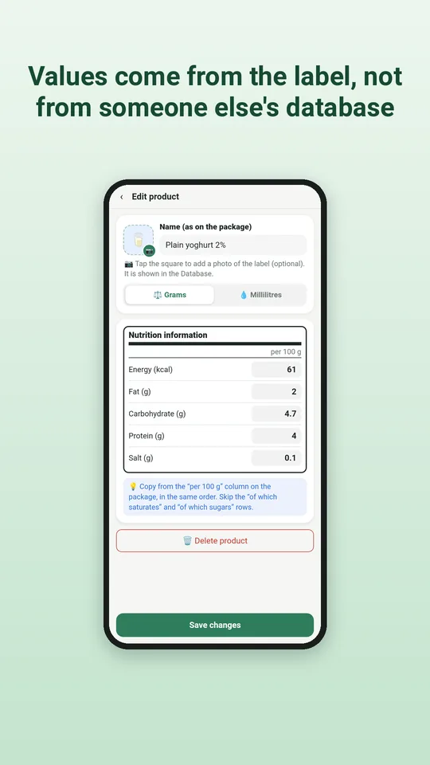
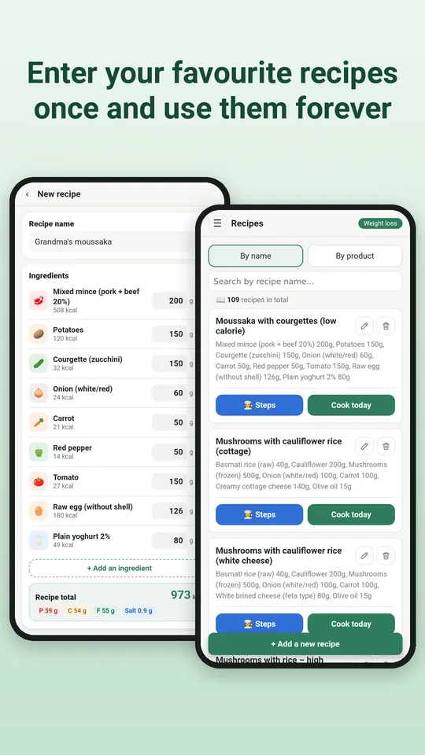
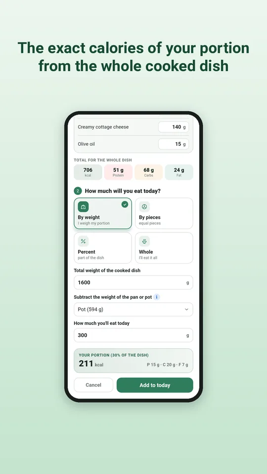
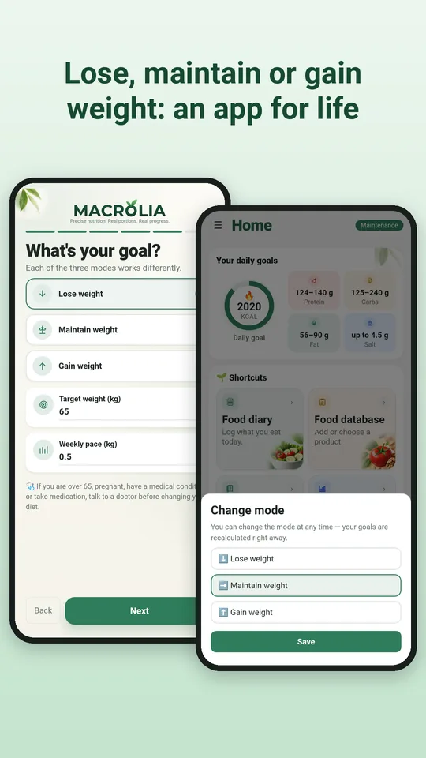
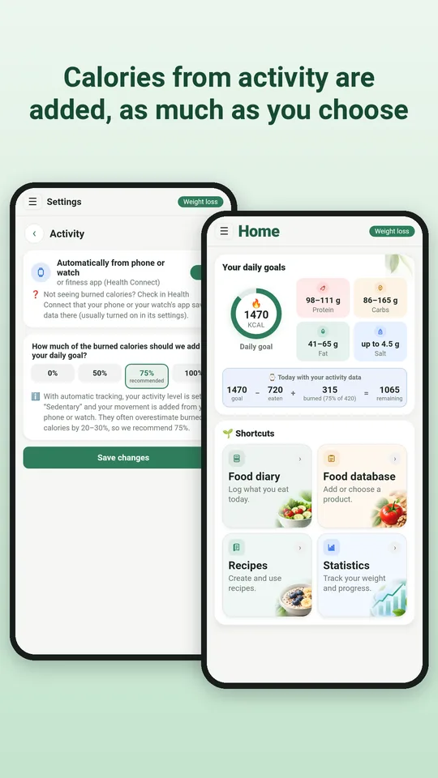
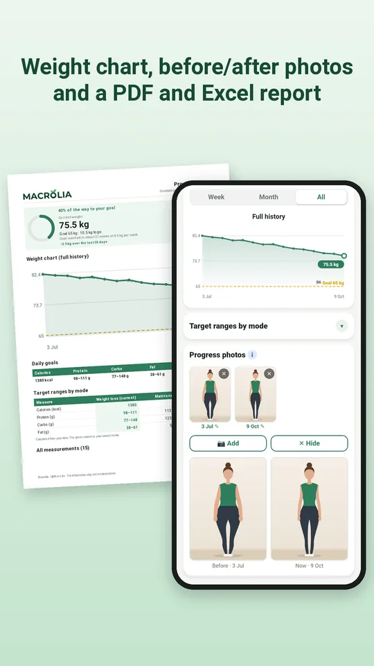
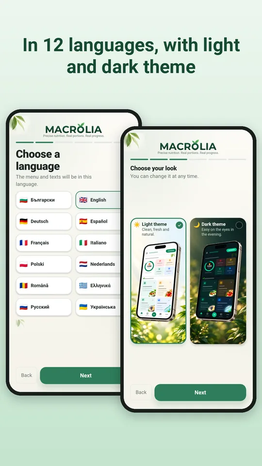

Precise calories and macros from the label. Your recipes, portions and goals.
A food diary for people who want exact numbers, not estimates. Every product comes from the label on the pack in your hand: enter it once, and every day and every recipe is calculated correctly for years.
A look inside








Why Macrolia
Accuracy from the label
You copy the values per 100 g from the pack, so the numbers match what you actually eat. No borrowed, outdated or wrong data.
Your family cookbook
Collect recipes from grandma's notebook, your cookbooks and favourite websites. Macrolia works out the calories and macros of every portion.
The exact portion of a cooked dish
Weigh the finished dish together with the pot. Macrolia subtracts the pot and calculates exactly how much you ate.
For life, not just for one diet
Lose, maintain or gain weight. When you reach your goal, Macrolia switches to maintenance and helps you keep the result.
Safe goals
Your daily target follows the Mifflin-St Jeor equation and clinical guidelines, with a safe pace and a calorie floor.
Calories from activity
Through Health Connect, from your phone alone, a watch or a fitness app. You choose how much is added to your target.
Your data stays yours
Everything stays on your phone. No sign-up, name or email needed, no ads and no tracking. You can save a backup, move your data to a new phone, and delete everything with one tap.
Subscription
Macrolia works with a monthly or yearly subscription, both with a 7-day free trial. Cancel any time in Google Play.
Available in 12 languages, with a light and a dark theme.
Macrolia is not a medical device. If you are over 65, pregnant, have a medical condition or take medication, talk to your doctor before changing your diet.